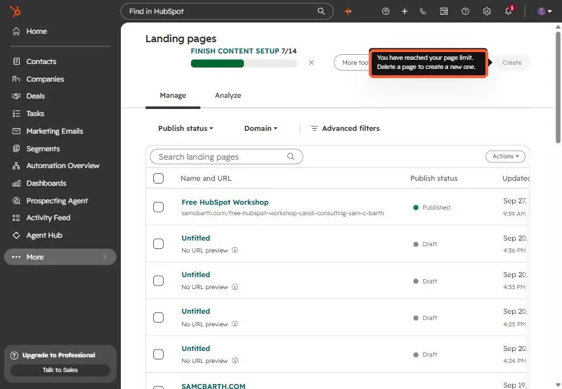
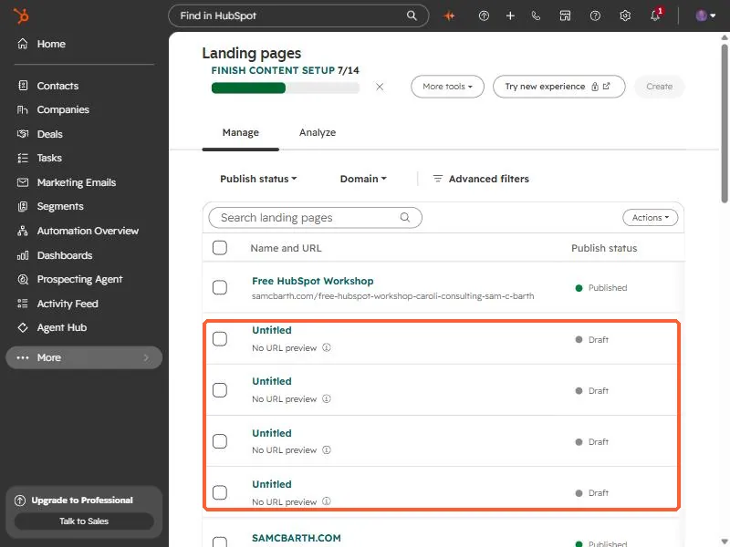
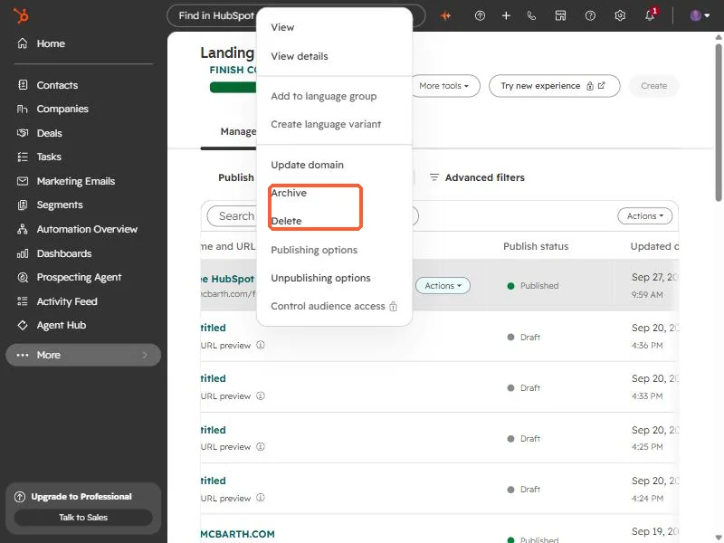

Short answer
When the Create button on Landing pages is disabled with "You have reached your page limit. Delete a page to create a new one.", open the list and look for Untitled drafts. They appear in the same list as published pages. Remove what you do not need from each row's Actions menu. I have not tested which of Archive or Delete frees a slot, so check that on one page first.
1. The message
On Landing pages, the Create button is greyed out. Hover it and the tooltip reads: You have reached your page limit. Delete a page to create a new one.


2. Look for Untitled drafts
Every time someone starts a page and walks away, a draft stays in the list. In my own account there were several Untitled drafts with no URL, sitting next to the published pages.


3. What the row menu offers
On a row, Actions includes View, View details, language options, Update domain, Archive, Delete, Publishing options, and Unpublishing options. Note there is no Clone in that menu on the landing page list.


Do not delete a published page to make room. Remove clearly unused drafts first, and confirm the Create button comes back before removing anything else. Check the limit for your subscription on the HubSpot pricing page.